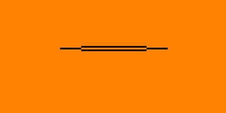
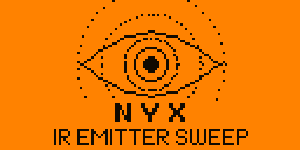
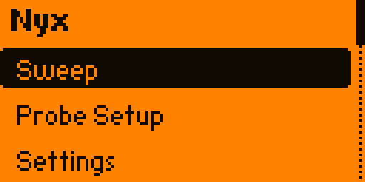
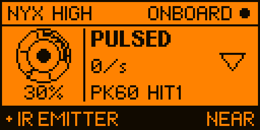
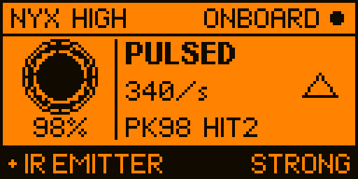
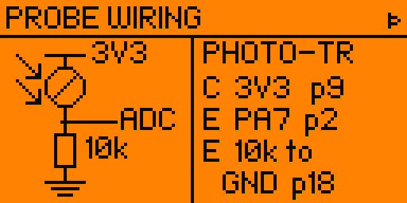
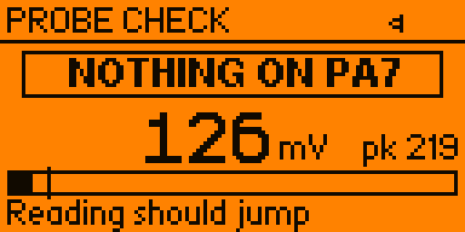
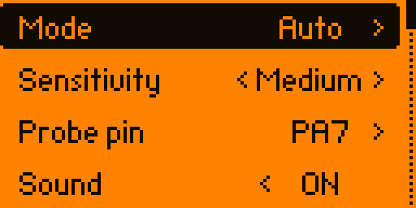
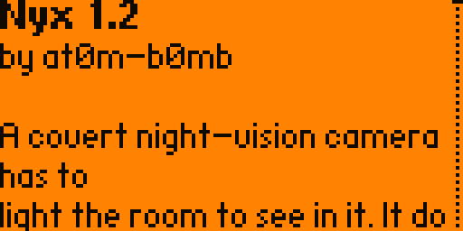

Flipper Zero — Infrared
See the light they hoped you couldn’t.
A covert night-vision camera has to light the room to see in it. It does that with 850/940 nm infrared your eyes cannot register. Nyx turns that giveaway into a meter you can walk around a hotel room or an Airbnb — and tells you plainly when it cannot help.
The instrument
The ring fills clockwise with the live level and the pupil dilates as you close in. A single tick marks your best reading so far, so the game is to push the ring past the tick.

Read this first
This is the part most “hidden camera detector” apps quietly skip, and it is the whole reason to trust or distrust a reading.
Nyx finds IR emitters, not cameras. A camera only shows up while it is actively lighting the room with infrared — which is exactly what a night-vision camera does in the dark. So Nyx is at its best doing a lights-off sweep, which is also when a covert camera is most likely emitting.
There is a second catch, and it comes from the Flipper’s own hardware.
The Flipper’s IR receiver is a demodulating part: a band-pass filter centred on 38 kHz plus automatic gain control, built to pull TV-remote codes out of a sunlit room. That filter throws away steady light. A camera whose illuminator runs at constant DC current — very common — is invisible to it no matter how bright it is.
A clean 0 in onboard mode does not mean the room is clean.
Nyx says so on the screen while it runs, not only here.
A bare IR phototransistor has no filter and no AGC, so it responds to steady light. It reads true DC level, nulls out the room’s ambient infrared when you arm it, and can tell a steady illuminator apart from a mains-flickering lamp by looking at ripple.
It costs about a dollar and two minutes. If you are serious about a sweep, wire the probe.
A worked example
A dome camera with its illuminator plainly running — the LEDs glow through a phone camera. Flipper held directly in front of it, onboard mode, sensitivity High. Logged straight off the device over 15 seconds.
Nyx reports nothing, and that is right. That illuminator runs at steady DC, and the onboard receiver is built to reject exactly that. A detector that lit up here would be inventing a result out of noise.
Point the same screen at a TV remote — a genuinely pulsed source — and it locks on solidly
at 98%, PULSED, STRONG. Quieter where it should be quiet, not deafer.
Earlier versions did light up here, briefly, on each of those four blips — and then dropped out again. v1.2 requires activity to persist before it will claim a detection.
Every screen
Not mockups. Each of these is a real framebuffer read off a Flipper Zero over its RPC session, rendered in the amber of the actual panel.








Changing sensitivity mid-sweep also zeroes the peak and hit count. Readings taken against a different noise floor are not the same measurement, and mixing them would quietly lie to you.
Optional, but it is the real tool
One IR phototransistor — the dark-epoxy kind with a daylight filter, sold for pairing with 940 nm IR LEDs — and one 10 kΩ resistor. It wires as an emitter follower: more IR in, more volts out.
3V3 (pin 9)
│
┌┴┐ IR phototransistor
IR →│ │ (collector to 3V3)
└┬┘
├──────► ADC pin — PA7 (pin 2)
┌┴┐
│ │ 10 kΩ
└┬┘
│
GND (pin 18)
Any ADC-capable pin works — in the order the picker offers them,
PA7 (2), PA6 (3), PA4 (4), PC3 (7),
PC1 (15), PC0 (16). The list is built from the SDK’s own GPIO table
rather than hardcoded, and the Probe Setup screen always shows the pin it currently expects by its
silkscreened number — trust the screen over this table.
Then open Probe Setup → → and press a key on any TV remote pointed at the phototransistor. If the reading jumps, you are good. That page exists because a probe wired wrong reads a flat zero, which is indistinguishable from a clean room.
Install
A .fap bakes in the API version of the SDK it was compiled against, and
the loader refuses to run one that is ahead of your firmware. There is no single build that serves
both firmware lines, so every release ships two.
If the loader says API version mismatch, you have the other
one — grab its counterpart. Drop the file in apps/Infrared/ on the SD card (qFlipper or
the mobile app). It appears under Apps → Infrared → Nyx.
python3 -m pip install --upgrade ufbt git clone https://github.com/at0m-b0mb/Nyx-FlipperZero.git cd Nyx-FlipperZero ufbt update --channel=release # or --channel=dev ufbt # builds dist/nyx.fap ufbt launch # build + install to a connected Flipper
Please read
Use Nyx to protect your own privacy, and only in spaces you are entitled to sweep. You are responsible for complying with local law.